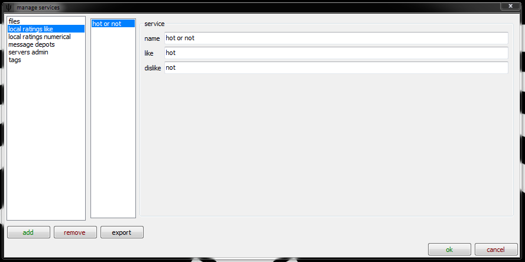

This is all prototype! I'm still working on this document! The network will soon support remote, collaborative ratings!
what is the difference between tags and ratings?
To rate a file qualitatively, to say that it is funny or sexy or a wallpaper, tags are the tool to use. To rate a file quantitatively, to say that it is 3/5 stars or critically excellent or terrible, we use ratings.
The hydrus client supports two kinds of ratings: like/dislike and a ℤ out of ℤ + n numerical rating. Let's start with the simpler one:
like/dislike
For now, since the client only supports local ratings, this is not terribly useful! You can define it in the services->add, remove or edit services dialog like so:

You can set the words for like or dislike as you like!
ℤ out of ℤ + n
This is just a clever way of saying something like 3 out of 5 stars or 8/10. This other rating system is a numerical, integer-only input (whole numbers only, no 3.5/5) based system. You can set the range however you like:

You can change these limits at a later date, and the database will adjust existing ratings appropriately (3/5 will go to 6/10, 9/10 will go to 4.5/5).
now what?
Once you are sorted with your services, you can edit ratings for one or more files with F4:

If you hit F4 on one file, the dialog will show that file's ratings. If you hit F4 on several files, it'll try its best to show you a summary of all the files' ratings. When you set new ratings with this dialog, the ratings will be applied to all files.
ratings filter
If you would like to rate many files quickly, the client now lets you 'filter' them, like with the inbox/archive filter. You select it from some thumbnails' right-click menu as usual.

This will launch a new fullscreen window that will show already rated files beside the images you wish to rate:

Once it has exhausted currently rated files, it will try to compare the unrated files with each other. The current controls are:
- Arrow key left or left mouse button: the left image is better
- Arrow key right or right mouse button: the right image is better
- Arrow key down or middle mouse button: the files are about equal
- Arrow key up or space: skip decision, and show another random comparison
- Backspace: I didn't mean that, go back one
- Escape or return: stop filtering now
Every small decision you make will give the client another clue about how good a file is; e.g. if you say a file is better than a 7/10 file, it must be either 8/10, 9/10 or 10/10. The client will later show you a file in this range to narrow it down further.
so, what now?
Ratings will show in the preview screen and fullscreen views, like so:

You can search with system:rating, and sort in the normal manner:

And that's it! Remote ratings will make this a _little_ more complicated, but not much.